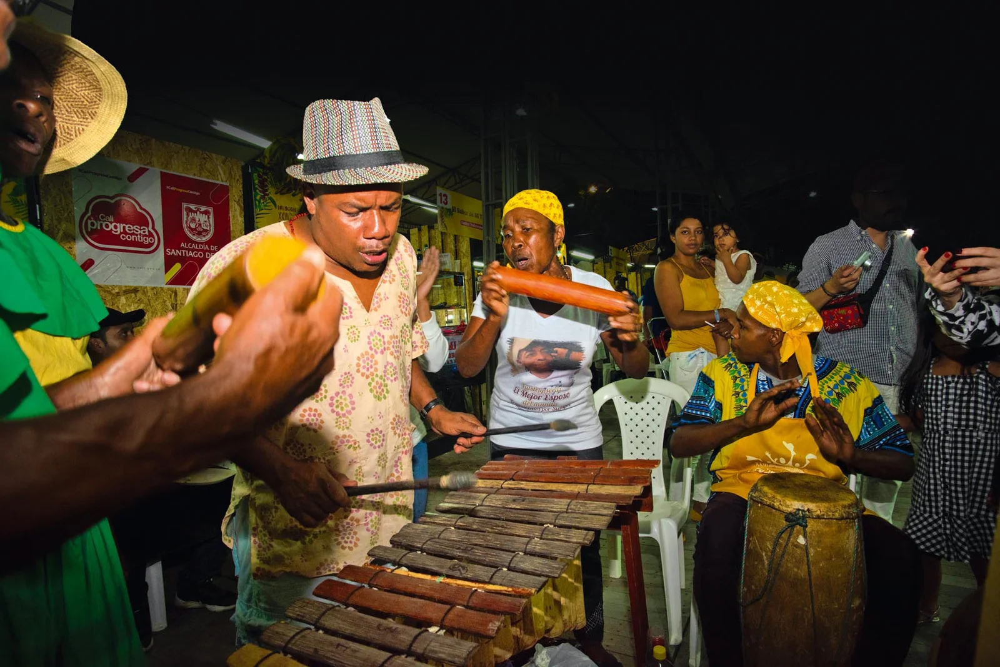
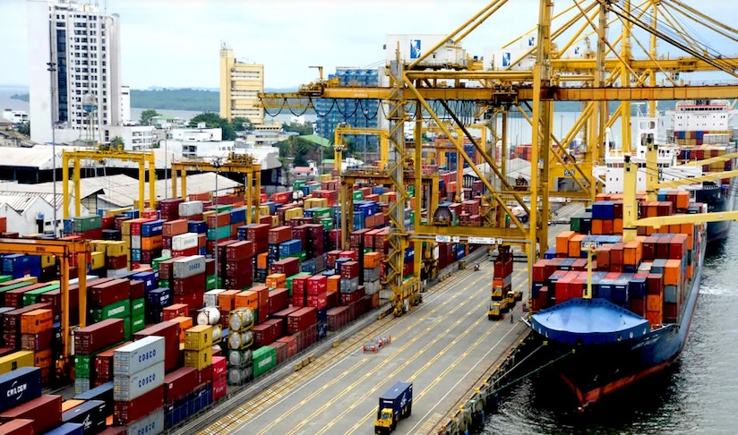
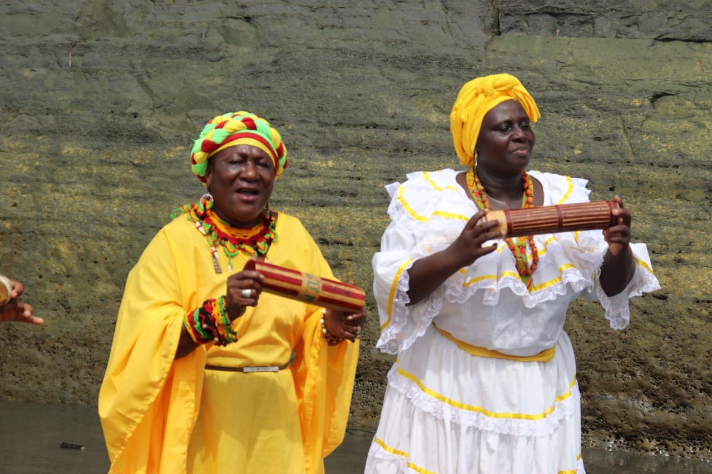

.png)

Somos un grupo de jóvenes soñadores, orgullosos de nuestras raíces y profundamente enamorados de nuestra tierra Buenaventura. Hemos decidido alzar la voz y trabajar juntos en un proyecto que busca mostrarle no solo a el país, sino al mundo entero que nuestra ciudad es mucho más que lo que a veces muestran las noticias.
.png)
Fortalecer y preservar la identidad cultural del Distrito de Buenaventura mediante un proceso de integración conscientes de las nuevas culturas que han emigrado a el puerto como la estadounidense. Herencia viva busca generar una conexión entre lo antiguo y lo moderno, pero siempre resaltando el patrimonio cultural ancestral de nuestro Bello Puerto.
.png)

El Distrito Especial de Buenaventura, Ubicado en la Costa Pacífica Colombiana, es un puerto lleno de historia, fundado en 1540 por el teniente Juan de Ladrillero, desde sus inicios se convirtió en un lugar estratégico para el comercio y la navegación, teniendo conexiones con regiones extranjeras, la construcción del ferrocarril en el año 1878 rigió de manera significativa el rol económico y con ello fortaleciéndolo.
Esta cultura descendiente de África, de la cual una gran parte de su población fue transportada de manera forzosa al continente americano, y por consecuencia, llegarían a las costas del Pacifico, desarrollaron una cultura hermosa y rica.

Haz clic en un proyecto para ver la información.